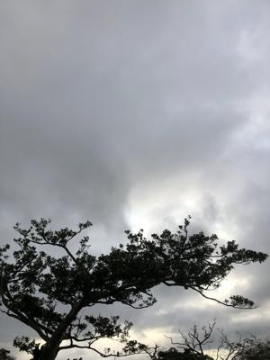
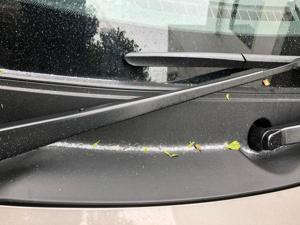
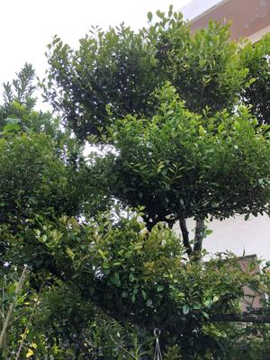
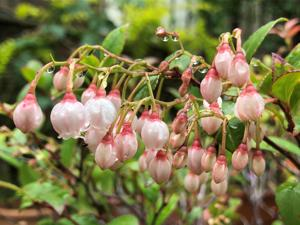

うるがいの話 ある日
最新: 白い粉【うるがいの話 ある日】とは 一日だけのプログです
『うるがいの話』の最新一日だけのプログで、通信料が少なく経済的だ。カニの画像をクリックすると全ての日付が載る『うるがいの話』サイトを表示します
|
|
【うるがいの話】 うるがい(ｳﾙｶﾞｲ urugai)とは、『もずくがに』の名前でとても大きくなります。 |
|---|---|
|
|
【カミマヤーの話】 猫のことを方言でマヤーといいます。カミマヤー（kamimayaa）とは、神の猫のことです。 |
|
【たながぁの音楽】 たながぁ（ﾀﾅｶﾞｰtanagaa）とは手長えびのことで、何種類かあり大きいのは車 エビぐらいになります。 |

|
【ぶながぁの話】 ぶながー(bunagaa)とは、赤い髪の毛、赤い身体、そして身長は１ｍ２０ｃｍ ぐらい、川の蟹を食べているの目撃された。場所は沖縄県国頭郡大宜味村のと ある村僕の隣近所に住んでいる爺さんから、聞いた話です。 |
|
|
【ギーマの話】 ギーマ(giima)とは、山原の里山に咲くスズランに似た、 花を付けます。実は食べられます、 気が付くと口の周りが紫になっています。 |
2022年04月01日 (金）白い粉
16:24
  
車のフロントガラスの方に沢山の白い粉が積もっている。おととい、綺麗に洗
ったのに、近くにある黒木（花はないと思うが）が一番怪しいが、なにか対策
しなければと令和４年度早々考えてしまった。その昔の職場にいた５０歳以上
になる管理職や、定年間近の人も勧奨退職を促されて退職すると知った。フー
ンと、 確か年金をもらえる歳に成っているはずの同期のケイさんを、除けば
皆後輩である。ま、私は第三の人生を歩んでいるが、皆は第二の人生をいろい
ろな形で歩んで行くのかなと、四苦八苦している第７回目の課題提出の動画研
修しながら考えている。

今日は、妹の旦那のお母さんの一年忌である、コロナ禍でなければ仏壇で手を
合わせたのだが。
１６時１６分 ビットコインの総資産 ￥１５、９０１↓